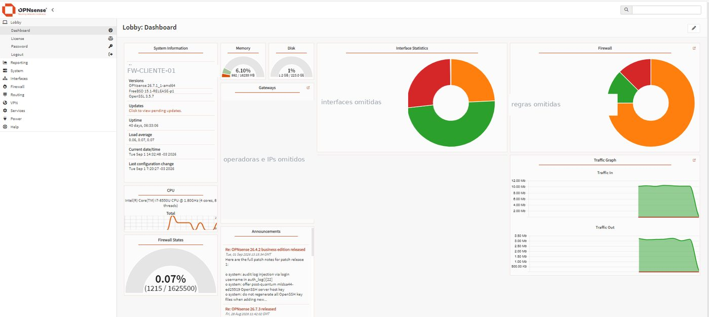
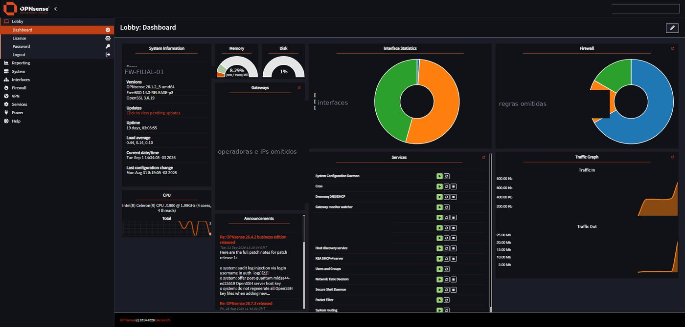
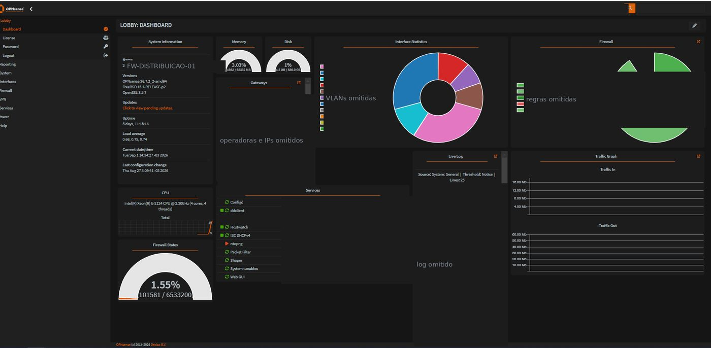
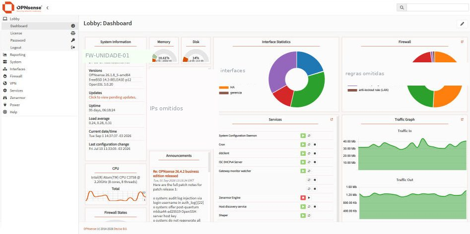

Redes corporativas projetadas para continuar de pé.
A Sartorio Network projeta, implanta e mantém a rede de empresas que não podem ficar fora do ar. Firewall, segmentação, VPN entre unidades e diagnóstico de desempenho — com documentação que fica com você no fim de cada projeto.
Rede que funciona, mas que ninguém consegue explicar
Na maioria das empresas a rede foi crescendo por necessidade: um switch aqui, uma regra ali, um cabo que alguém passou às pressas. Funciona — até o dia em que precisa mudar. Estas são as três situações em que a gente costuma entrar:
O firewall está vencendo
A renovação chegou mais cara que o equipamento, e ninguém tem certeza de quais recursos da licença são realmente usados. É o momento certo para repensar, não só renovar.
Tudo está na mesma rede
Servidores, câmeras, Wi-Fi de visitante e estações convivendo no mesmo segmento. Funciona bem no dia a dia, mas qualquer incidente se espalha sem barreira.
Existe um problema sem explicação
Lentidão ou travamento que aparece e some, e que já custou troca de equipamento sem resolver. Sem medição e histórico, o diagnóstico vira tentativa e erro.
O que fazemos
Cada entrega termina com material em mãos: diagrama atualizado, mapa de VLANs, regras comentadas e plano de rollback. A ideia é que a sua equipe consiga tocar o dia a dia sem depender da gente.
Firewall OPNsense
- Dimensionamento do hardware e instalação
- Regras por zona, NAT e publicação de serviços
- IDS/IPS, filtro de DNS e bloqueio de ameaças
- Migração assistida do firewall atual, em janela combinada
Alta disponibilidade
- Par de firewalls com sincronismo de estado
- Teste de failover feito na frente do cliente
- Múltiplos links de internet com balanceamento
- Para operação que não admite indisponibilidade
Segmentação e VLANs
- Separação de servidores, usuários, dispositivos e visitantes
- Políticas entre segmentos aplicadas no switch e no firewall
- Padronização de nomes, portas e agregações
- Trabalhamos com switches corporativos de todos os principais fabricantes
VPN corporativa
- Túneis site a site entre matriz e filiais
- Acesso remoto para equipe e fornecedores, com duplo fator
- Rotas e permissões por perfil de usuário
- Substituição de soluções instáveis de acesso remoto
Diagnóstico de rede
- Levantamento da topologia e desenho do diagrama real
- Captura de tráfego e investigação de lentidão e perda
- Monitoramento com alertas que fazem sentido
- Relatório técnico com prioridades e estimativa de custo
Suporte contínuo
- Atualizações, backup de configuração e revisão de regras
- Prazo de atendimento definido em contrato
- Acompanhamento das janelas de manutenção
- Relatório periódico de saúde da rede
Do primeiro contato à rede documentada
-
Conversa inicial, sem custo Trinta minutos para entender o ambiente, o que incomoda hoje e o que não pode parar em hipótese alguma.
-
Diagnóstico Levantamento remoto ou presencial da topologia, da configuração atual e dos pontos de risco. O relatório é seu, mesmo que o projeto não avance.
-
Proposta com escopo fechado Valor, prazo, janela de execução e plano de rollback definidos antes de qualquer alteração em produção.
-
Execução em janela combinada Mudanças fora do horário crítico, com a configuração anterior salva e caminho de volta garantido.
-
Entrega e passagem de conhecimento Documentação, diagrama, credenciais em cofre e uma sessão com a sua equipe para explicar o que foi feito.
Ambientes que operamos
Projetos executados em operação real, em três estados. Por confidencialidade não identificamos as empresas — o escopo e os números são reais.
Cluster de firewall em alta disponibilidade
Par de firewalls sincronizados protegendo a rede de afiliados e a cadeia de transmissão para todo o Brasil. Failover testado, com caminho de volta garantido em cada janela.
VPN entre unidade comercial e transmissor
Túnel interligando a unidade em shopping ao sítio do transmissor, em Brasília, conectando gateways e redes distintas sem expor nenhum dos dois lados.
Firewall de borda em unidade regional
Implantação em São José do Rio Preto: múltiplos links, políticas por zona e monitoramento de gateway com acompanhamento de perda e latência.
Wi-Fi de distribuição para +600 clientes
Firewall dedicado à rede de distribuição sem fio, com segmentação por VLAN, controle de acesso e visibilidade de tráfego em tempo real.
Estruturação completa de rede
Separação entre switches de WAN e de LAN, padronização de portas e trunks, cabeamento etiquetado e reorganização física do rack.
Análise e documentação
Levantamento da topologia real, mapeamento de VLANs e portas em planilha, diagramas atualizados e registro das mudanças aplicadas.




As imagens são de ambientes reais em operação. Hostnames, endereços IP, nomes de operadora, identificação de VLANs e registros de log foram removidos antes da publicação — é o mesmo cuidado que aplicamos na documentação que entregamos a cada cliente.
Publicamos documentação técnica e estudos no GitHub e no Instagram.
Marco Sartorio
Supervisor de TI responsável pela rede, pela segurança e pela infraestrutura de broadcast de um grupo de comunicação com quatro unidades. Formado em Ciência da Computação, com pós-graduação em Cibersegurança.
O dia a dia é operação ao vivo: rede que não pode cair, mudança que precisa de caminho de volta e documentação que outra pessoa consiga ler de madrugada. É o mesmo critério que aplicamos em cada projeto da Sartorio Network.
Com o que trabalhamos
- Firewall OPNsense e pfSense
- Switches corporativos gerenciáveis
- VLAN, agregação de links, roteamento dinâmico e QoS
- VPN site a site e acesso remoto
- Virtualização de servidores
- Monitoramento e coleta de tráfego
Antes de você perguntar
OPNsense é adequado para empresa? É um firewall gratuito?
É um firewall corporativo de código aberto, com desenvolvimento ativo e uso em produção no mundo inteiro. Não há licença por recurso nem por usuário: o investimento vai para o hardware adequado e para a engenharia da implantação. A segurança vem da configuração correta, não da marca do equipamento.
Vamos precisar parar a operação para trocar o firewall?
Na maior parte dos casos a migração é preparada em paralelo e a virada leva poucos minutos, em janela combinada e com o equipamento antigo pronto para voltar. Em ambientes críticos montamos o cenário em bancada antes de encostar na produção.
Vocês atendem fora de São Paulo?
Sim. Projeto, configuração e suporte são feitos remotamente para todo o Brasil. A parte física pode ser presencial na Grande São Paulo ou conduzida junto com a equipe local do cliente.
Como funciona a cobrança?
Projetos são orçados com escopo fechado, com valor e prazo definidos na proposta. Suporte contínuo é contrato mensal com prazo de atendimento acordado. A conversa inicial e o diagnóstico não têm custo.
Nossa equipe consegue administrar depois?
É essa a intenção. A entrega inclui documentação e uma sessão de passagem de conhecimento. Se você preferir manter o suporte conosco, existe contrato mensal — mas por escolha, não por dependência.
Vamos olhar a sua rede
Descreva em duas linhas o que está acontecendo. Respondemos em até um dia útil com uma avaliação inicial e os próximos passos, sem compromisso.
- +55 (11) 99346-2168
- contato@sartorionetwork.com.br
- Atendimento
- São Paulo/SP e remoto para todo o Brasil